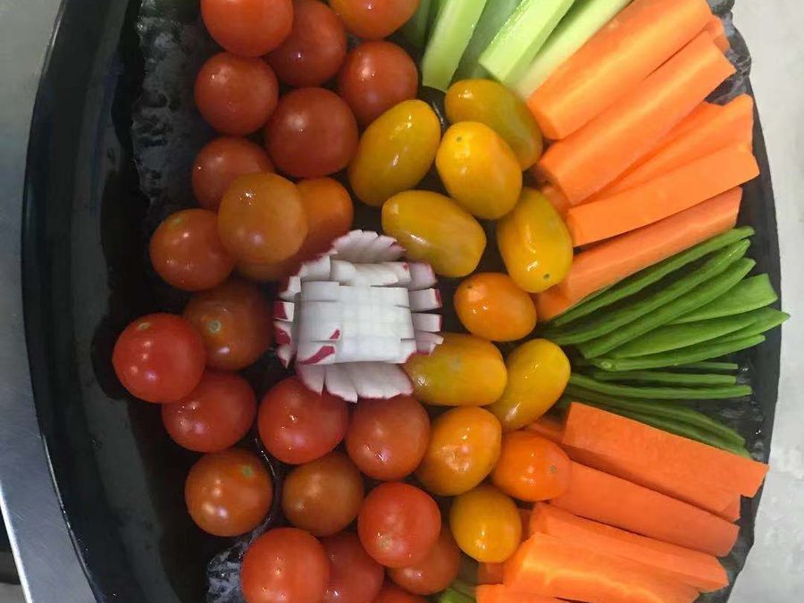
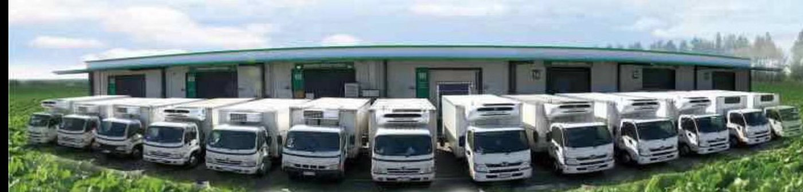
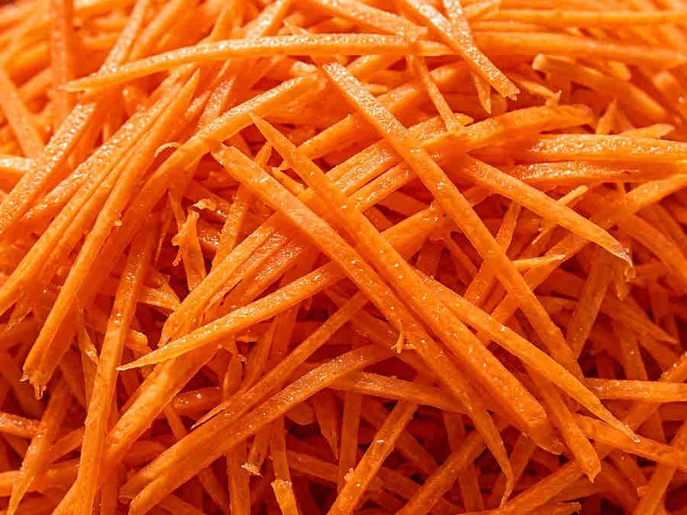

Ownership100%
Aboriginal-owned
First Nation Fresh Foods is genuinely Aboriginal-owned and led. Buyers working with us support an Indigenous enterprise directly.
Genuine Indigenous ownership together with three decades of Western Australian fresh produce and food processing experience.
First Nation Fresh Foods Pty Ltd is a proudly Aboriginal-owned Western Australian company supplying fresh fruit and vegetables, hand-processed produce and chef-prepared value-added foods.
We operate from Malaga in partnership with an established Western Australian processing business, so buyers get the social value of Indigenous procurement together with the infrastructure, certification and reliability of an operation that has supplied this state for more than thirty years.
Our purpose is simple: create lasting opportunity for First Nations people and communities, while delivering produce our customers can depend on.

Genuine Aboriginal ownership, with the commitments to employment, training, partnership and community that go with it.
First Nation Fresh Foods is genuinely Aboriginal-owned and led. Buyers working with us support an Indigenous enterprise directly.
Supporting Indigenous employment, training, leadership and business development as the business grows.
Building strong and respectful partnerships with First Nations communities, growers and businesses.
Developing a proudly Indigenous product range and brand, including foods made with native Australian ingredients.
See our own label →Government agencies and corporate buyers increasingly carry Aboriginal procurement commitments. Working with First Nation Fresh Foods lets those commitments be met through a supplier with the certification, cool-chain infrastructure and delivery capability that institutional supply demands.
Buyers do not have to choose between social value and operational reliability.

The processing operation we work through has supplied Western Australian kitchens since 1993.
Operations began in a small unit in Cannington, supplying wholesale fruit and vegetables and hand and machine processed produce to a niche hospitality market.
Relocation to the Canning Vale Markets, cutting transport costs and building direct grower and market agent relationships.
A fruit and vegetable retail operation at the markets lifted stock levels and sped up produce turnover.
A move into purpose-built food processing and warehouse premises close to the Perth Metropolitan Markets, with daily market and grower access.
First Nation Fresh Foods Pty Ltd established at Malaga, bringing Aboriginal-owned fresh and value-added food supply to WA buyers.
Twelve separate cool rooms running different temperatures for different produce, plus two freezer rooms and two blast chillers.
A dedicated refrigerated delivery service with purpose-built cooled loading docks, running fourteen trucks and express vans.
Six professional chefs and cooks on staff, providing product development and technical support to customers.
Being located close to the Perth Metropolitan Markets lets us source produce directly on any given day, supported by grower-supplied produce accessed daily. What reaches your kitchen is as close to harvest as the supply chain allows.

Add lines to a quote specification as you browse, or send us your requirement and our sales desk will respond with availability and pricing.